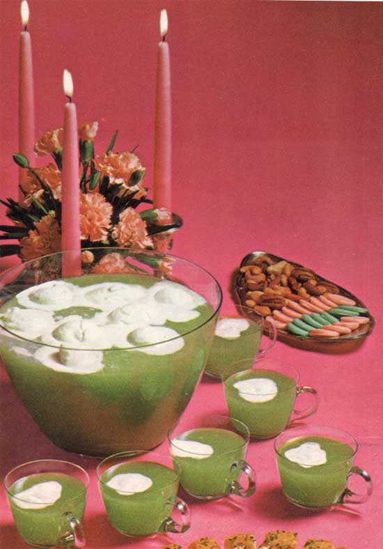

Monday, August the 2nd, 2004
back to: title, date or indexes
I am indebted to Hooting Yard's roving reporter Velma Nebraska for drawing my attention to some highly disagreeable foodstuffs. If you are hosting a dinner party this week, and I'm sure you are, (while I certainly am not), be sure to serve your starving guests this inexplicable goo:
